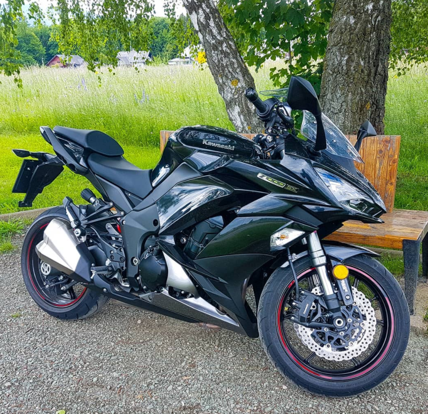

Vožnja z motorjem je super stvar. Na tej strani bom opisal kje se najraje vozim, kakšno opremo uporabljam, ter s kakšnim motorjem se vozim.
Najraje se vozim po avstrijskih cestah, predvsem po kakšnih gorskih. Npr. Alpine Alpenstrasse, Nockalmstrasse, ipd.
Trenutno imam Kawasaki z1000sx. Na povezavi si lahko ogledate en odsek iz vožnje.

Nekaj specifikacij: